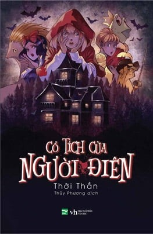

Cỗ Tích Của Người Điên
GIÁ(vnd):
70.300 đ/
95.000 đ
-26%
Chi Tiết:
Cổ Tích Của Người Điên
Cổ tích không chỉ để đọc, cổ tích còn dùng để phá án.
Từ một bệnh viện tâm thần, một cuốn sổ được kín đáo đưa ra ngoài, trong đó ghi chép câu chuyện cổ tích chưa
từng
thấy về cuộc chiến giữa hai phe, một là Yêu tinh Râu Xanh, hai là liên minh Hoàng tử Ếch, Mèo Đi Hia, Nhím
Hans,
Lọ Lem và Khăn Đỏ. Liên minh có mục tiêu đánh bại Râu Xanh và cứu thoát công chúa Bạch Tuyết. Nhưng khác với
truyện cổ tích thông thường, truyện này kết thúc ở chỗ tà đã thắng chính, Bạch Tuyết phải sống mãi mãi với
Râu
Xanh trong nước mắt, ở một lâu đài chất đầy thịt người bỏ lọ.
Câu chuyện kì dị ấy chứa đựng những manh mối về một vụ án bí hiểm cách đây hai mươi năm, với rất nhiều người
bỏ
mạng một cách khó hiểu trong dinh thự của một nhà giàu. Không động cơ, không ân oán, không hung thủ. Chủ
nhân dinh
thự bị coi là nghi phạm, đã mau chóng hóa điên và bỏ trốn khỏi hiện trường với tốc độ marathon kỉ lục là 60
km/h.
Ông ta bị bắt và tống vào viện tâm thần một thời gian thì treo cổ, để lại cuốn truyện cổ tích thay người,
thay cho
lời kêu oan thống thiết.
Hai mươi năm sau, theo lời mời của hậu duệ chủ nhân, một số nhân tài không hề dính líu đến ai trong vụ án
năm xưa
đã ngồi quây quần để lật lại chân tướng. Nhưng chỉ qua một hôm, hậu duệ này bị giết trong phòng kín, bỏ lại
các vị
khách hoang mang ngơ ngác. Lại không động cơ, không ân oán, không hung thủ, thậm chí không cách thức gây án.
Tất cả những manh mối còn lại, chỉ là cuốn truyện cổ tích đen.